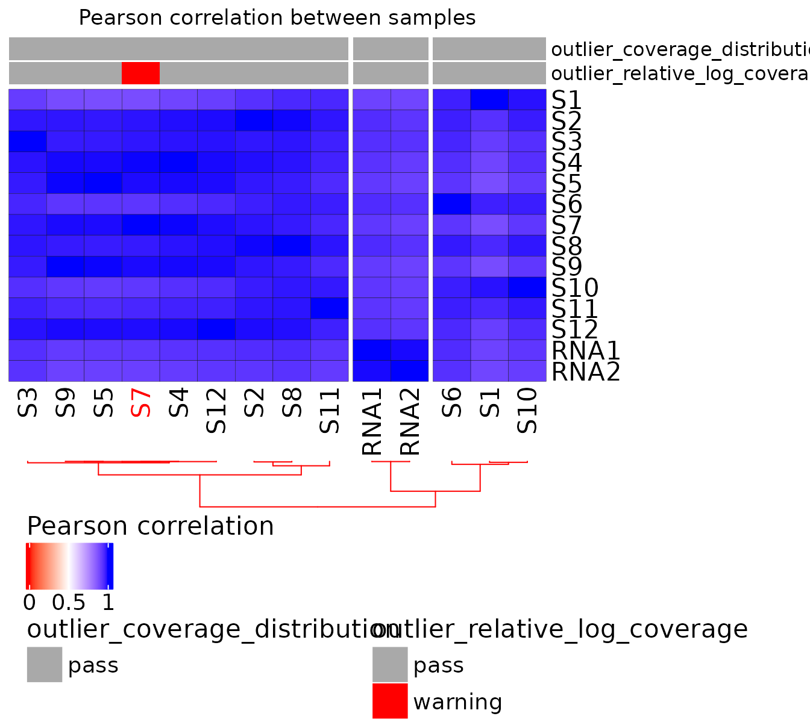
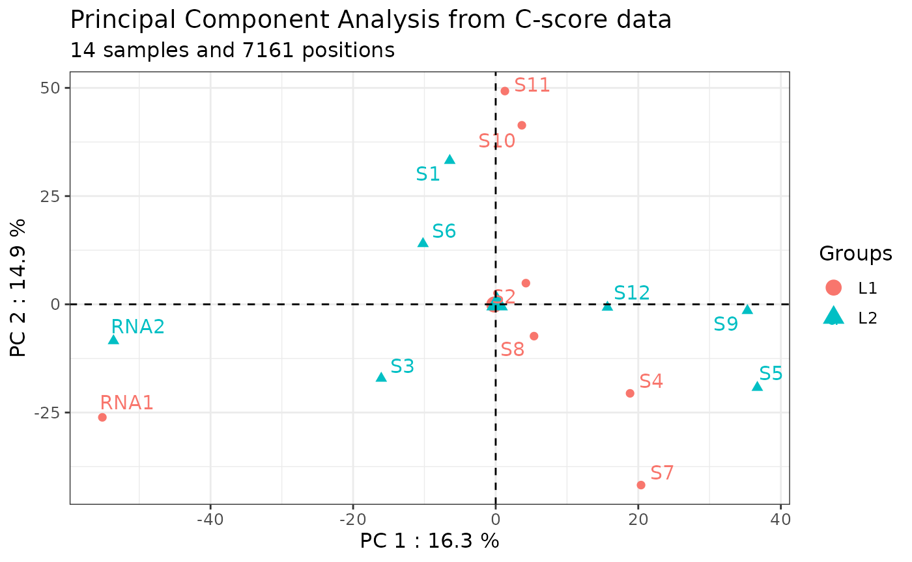

rRMSAnalyzer: package to analyze RiboMethSeq data
Théo COMBE, Hermès PARAQINDES, Allyson MOUREAUX, Janice KIELBASSA, Fleur BOURDELAIS, Sébastien DURAND, Emilie THOMAS, Anthony FERRARI and Virginie MARCEL
09/08/2025
Source:vignettes/rRMSAnalyzer.Rmd
rRMSAnalyzer.RmdAbstract
RiboMethSeq is an innovative RNAseq-based approach, which was
developed in 2015 to analyze 2’O-ribose methylation (2’Ome) at all
sites of ribosomal RNAs (rRNA) at once, in yeast (Birkedal et al. 2014). This approach was
then transferred to human using the Illumina technology (Marchand et al. 2016; Erales et al. 2017; Marcel
et al. 2021). Briefly, the presence of 2’Ome protects the
phosphodiester bond located at the 3’ of the 2’Ome nucleotide from
alkaline hydrolysis. Thus, the presence of 2’Ome at the given
nucleotide n induces under-representation of RNA fragments
starting at the nucleotide n+1 and an over-representation of RNA
fragments ending at the nucleotide n-1, allowing the extrapolation
of 2’Ome levels at the corresponding nucleotide position n (or
C-score) varying from 0 to 1 (Birkedal et
al. 2014).
The rRMSAnalyzer package can be used
for any kind of RNA and with all organisms. This package provides
a set of user-friendly functions to compute C-scores from
RiboMethSeq read end counts as input, adjust batch effect with
ComBat-Seq, visualize the data and provide a table with the
annotated human rRNA sites and their C-scores. This package
provides a set of user-friendly functions to (i) compute C-scores
from RiboMethSeq read-end counts as input,(ii) perform quality
control of the dataset, (iii) adjust batch effect with ComBat-Seq,
and (iv) provide tools to visualize, analyze the data and provide
a table with the annotated human rRNA sites and their C-scores
(Paraqindes et al., 2023), (v) return automated QC and analytic
reports. Raw data processing to obtain read-end counts from
sequencing data can be performed using our Nextflow pipeline ribomethseq-nf,
as already described (Marchand et al.
2016).
General information
Help, bug reports and suggestions
To report a bug or any suggestion to improve the package, please let us know by opening a new issue on: https://github.com/RibosomeCRCL/rRMSAnalyzer/issues
Funding
This project has been funded by the French Cancer Institute (INCa, PLBIO 2019-138 MARACAS), the SIRIC Program (INCa-DGOS-Inserm_12563 LyRICAN) and Synergie Lyon Cancer Foundation.
Installation
The latest version of rRMSAnalyzer package can be installed from Github with :
devtools::install_github("RibosomeCRCL/rRMSAnalyzer")
library(rRMSAnalyzer)Initial preparation of the dataset
RiboClass
RiboClass is the main class of the package that enables the storage
of both the data matrices (read-end counts and C-scores) and the
associated metadata. It is automatically created when calling
load_ribodata() (see Loading data).
It is a list containing three main elements, as described below:
Data: a list of dataframe, containing for each sample the 5’ and/or 3’ read-end counts provided by the user, and the calculated C-score.
Metadata: a dataframe, containing all the information related to the samples that can be provided by the user.
rRNA_names: a dataframe, reporting the names of the rRNA used in Data.
Some major function parameters (such as the normalization method used for C-score computation) are also kept in the RiboClass object as a reminder.
Loading data
Data to provide
Read-end counts
To use this package, the user must provide at least one csv/tsv file with the 5’, 3’ or 5’/3’ read-end counts resulting from RiboMethSeq data per sample. The folder structure containing the csv files is not important, as long as either the directory and its sub-directories contain the necessary csv/tsv files.
The name of the rRNA on which the read end counting was performed.
The position’s number on the rRNA.
The value of the read-end counts at the position.
Here is an example :
| rRNA | Position on rRNA | read end count |
|---|---|---|
| 18S | 123 | 3746 |
| 18S | 124 | 345 |
| 18S | 125 | 324 |
| 18S | 126 | 789 |
| 18S | 127 | 1234 |
Note 1: it is not necessary to provide a header in the count files,
because column index can be used in the function
load_ribodata(), using count_value(),
count_rnaid() and
count_pos() arguments.
Note 2: if no metadata is specified (metadata = NULL), rRMSAnalyzer will try to fetch any csv files in the folder specified in count_path and its subfolders.
Metadata
The expected metadata is either a dataframe already in the R environment or a csv/tsv file.
Two columns are mandatory for the metadata :
filename: name of the csv file on disk containing the read-end counts described above. Do not modify it unless the filename has changed on disk.
samplename: rename the samples that will be analyzed and displayed on the plots. This column can be modified, as long as the sample names are unique.
After these two mandatory columns, the user can provide as many columns as needed for the analysis.
Here is an example of metadata for 3 samples:
|
filename (mandatory) |
samplename (mandatory) |
condition (optional) | |
|---|---|---|
| sample1.csv | sample 1 | condition 1 |
| sample2.csv | sample 2 | condition 1 |
| sample3.csv | sample 3 | condition 2 |
Note: if no metadata is provided in
load_ribodata() (metadata = NULL), an empty
metadata will be created with the “filename” and “samplename” columns
pre-filled. The “samplename” column will be identical to “filename”, but
can be modified by the user.
Here is an example of auto-generated metadata:
| filename | samplename |
|---|---|
| sample1.csv | sample1.csv |
| sample2.csv | sample2.csv |
| sample3.csv | sample3.csv |
How to load the data
To load both data and metadata, and store them in a RiboClass, the
function load_ribodata() is used.
The following example displays a call to
load_ribodata(), with all arguments shown :
path <- system.file("extdata", package="rRMSAnalyzer") #change for your path
ribo <- load_ribodata(
#data & metadata files path
count_path = file.path(path,"miniglioma/"),
metadata = file.path(path,"metadata.csv"),
# data & metadata files separator
count_sep = "\t",
metadata_sep = ",",
# count data arguments :
count_header = FALSE,
count_value = 3,
count_rnaid = 1,
count_pos = 2,
# Metadata arguments :
metadata_key = "filename",
metadata_id = "samplename",
# C-score arguments :
flanking = 6,
method = "median",
ncores = 1)
#> ✔ Your data has been successfully loaded!rRNA names
Provided
rRNA names are automatically obtained from the data and stored in a generated dataframe inside the RiboClass. It contains two columns :
original_name: original name of each rRNA (e.g NR_023363.1).
current_name: current name of each rRNA, reflecting any user’s change with
rename_rna()function (see [Rename RNA]).
This dataframe is used to keep track of the original name, which often includes the NCBI’s accession ID.
Here is an example:
| original_name | current_name |
|---|---|
| NR_023363.1_5S | 5S |
| NR_046235.3_5.8S | 5.8S |
| NR_046235.3_18S | 18S |
| NR_046235.3_28S | 28S |
Custom
The user must not modify this dataframe manually. To rename or remove
rRNA, the user can use rename_rna() and
remove_rna(). The dataframe will be updated
accordingly.
C-score calculation
What is a C-score ?
The C-score is a metric, calculated from the RiboMethSeq sequencing data, used to evaluate the level of 2’O-ribose methylation (2’Ome) at a given position in the rRNA.
The C-score is calculated by normalizing the end read count with respect to the local environment at each genomic position and directly indicates the rRNA 2’Ome level. The C-score ranges from 0 (i.e., no rRNA molecules of the sample are 2’Ome at this specific site) to 1 (i.e., all rRNA molecules of the sample are 2’Ome at this specific site). A C-score with an intermediate value between 0 to 1 means that the sample contains a mixture of un-2’Ome and 2’Ome rRNA molecules.
To obtain a robust estimate of the 2’Ome level, different C-scores can be determined depending on the arguments used to compute the local coverage. In particular, the estimation method and the size of the local coverage to be considered can be changed.
By default, the local coverage is estimated by calculating the median of the 5’ read-end counts in a flanking region of 6 (i.e., 6 nucleotides downstream the nucleotide n and 6 upstream the nucleotide n, where n is the nucleotid directly following the 2’Ome site of interest). This package provides the ability to change these two arguments either when loading the data or during the analysis.
C-score computation when loading data
When using the load_ribodata() function, a
C-score is automatically calculated for all genomic positions of the
rRNA. The C-score is computed using either the default arguments of the
load_ribodata() function or user-defined arguments
as follows:
load_ribodata(count.path = "/path/to/csv/",
metadata = "/path/to/metadata.csv",
# everything below is linked to C-score computation
flanking = 6, # flanking region size
method = "median", # use mean or median on flanking region's values
ncores = 8 # number of CPU cores to use for computation
)C-score computation during the analysis
During the analysis, the C-score calculating arguments (method and
size of the flanking region) can be modified using the
compute_cscore() function, which will
automatically update the C-score in the RiboClass.
In the following example, both the flanking region’s size of the local coverage and the computation method have been modified:
# Compute the C-score using different arguments,
# including calculation of the local coverage using the mean instead of the median
ribo <- compute_cscore(ribo,
flanking = 4,
method = "mean")Important: this function will override the previous C-score of the RiboClass.
Quality control
Due to technical limitations, it is sometimes necessary to conduct wet-lab preparations of large cohorts in several batches. The main risk when making several batches is to introduce technical biases or batch effect in the dataset.
Content of the QC report
A quality control (QC) report can be performed. It uses several metrics to help identify outlier samples and/or batch effects, including read-end counts and the C-score itself at all the 7217 genomic positions. The QC verifies that the coverage is uniform and reproducible between samples, eliminating the possibility of bias due to sequencing and outliers.
QC can be either performed using a panel of ready to use functions, which correspond to data visualization, or automatically.
The automatic QC report can be generated using the
report_qc() function:
With the ribo_toy example, the column that contains the information
about samples batches is called “run”. The name is thus given to the
library_col argument but it can be also left
empty.
report_qc(ribo = ribo_toy, library_col = "run")The QC report includes the following visualizations:
- Read-end counts distribution by sample
(
boxplot_count()) - Relative log coverage (i.e., end read count) by sample
(
plot_rlc()) - rRNA fraction of read-end counts per sample
(
plot_count_fraction()) - Heatmap summarizing the correlation matrix of the read-end counts
(
heatmap_annotated()) - Correspondence analysis of the read-end counts
(
plot_coa()) - Principal component analysis (
plot_pca())
Correlation matrix
To add outlier annotations on the heatmap,
get_outliers() function must be used. This
function computes all the outliers identified in the QC and returns a
data frame summary for use in
plot_heatmap_annotated()
Here is an example of correlation matrix with outlier identification:
qcdata <- rRMSAnalyzer::get_outliers(ribo)
plot_heatmap_annotated(ribo, qcdata)
Output of the QC report
Information issued from the QC report can be return as followed:
Here is an example of QC output:
output_dir <- getwd()
# To display the output
knitr::kable(qcdata, "html") %>% kable_styling("striped") %>% scroll_box(width = "100%", height = "500px")| samplename | condition | run | filename | median_coverage | coverage_quality | rlc_median | rlc_median_quality | total_outliers | |
|---|---|---|---|---|---|---|---|---|---|
| S1 | S1 | cond1 | L2 | S1_5_counts.csv | 1761 | pass | 0.0575140 | pass | 0 |
| S2 | S2 | cond2 | L1 | S2_5_counts.csv | 1292 | pass | -0.3439012 | pass | 0 |
| S3 | S3 | cond2 | L2 | S3_5_counts.csv | 2212 | pass | 0.3954259 | pass | 0 |
| S4 | S4 | cond2 | L1 | S4_5_counts.csv | 2147 | pass | 0.3337012 | pass | 0 |
| S5 | S5 | cond2 | L2 | S5_5_counts.csv | 1682 | pass | -0.0113976 | pass | 0 |
| S6 | S6 | cond2 | L2 | S6_5_counts.csv | 1774 | pass | 0.0499721 | pass | 0 |
| S7 | S7 | cond2 | L1 | S7_5_counts.csv | 696 | pass | -1.2547609 | warning | 1 |
| S8 | S8 | cond1 | L1 | S8_5_counts.csv | 1759 | pass | 0.0618611 | pass | 0 |
| S9 | S9 | cond1 | L2 | S9_5_counts.csv | 1394 | pass | -0.2504866 | pass | 0 |
| S10 | S10 | cond1 | L1 | S10_5_counts.csv | 1625 | pass | -0.0767012 | pass | 0 |
| S11 | S11 | cond1 | L1 | S11_5_counts.csv | 1632 | pass | -0.0471291 | pass | 0 |
| S12 | S12 | cond1 | L2 | S12_5_counts.csv | 1683 | pass | 0.0062753 | pass | 0 |
| RNA1 | RNA1 | RNA ref | L1 | RNA1_5_counts.csv | 1593 | pass | -0.1061994 | pass | 0 |
| RNA2 | RNA2 | RNA ref | L2 | RNA2_5_counts.csv | 2316 | pass | 0.3822330 | pass | 0 |
# To save the output
write.table(qcdata,file.path(output_dir,"quality_control.csv"),sep="\t",row.names=FALSE,quote = FALSE)Comments
A Comments section is available in the QC report to add some personal
comments. To do so, a Rmarkdown file should be created and saved in the
working directory. Then, path to this report should be given in the
comments argument of the report_qc()
function.
report_qc(ribo = ribo, specie = "human", library_col = "run", comments = "./path/to/comment_QC.Rmd")Example of comments in rmd extension
```{=html}
<style type="text/css">
body {
font-family: Helvetica;
}
/* Apply a skyblue background to the blocks <details> */
details {
background-color: #9ecae1;
padding: 10px;
border-radius: 5px;
}
</style>
``` # erase this '#' and this sentence
<details>
<summary><b> ℹ Comments on the report </b></summary>
<div markdown="1">
<p>
Text can be entered from here ...
Subtitle can be added with '##' symbol:
## 5.3 Level 2 title {-} #this symbol {-} avoid continue the numbering of the table of content
...to here. Those last 2 lines below must be kept. They are usefull for the layout.
</div>
</details>
#copy/past in an rmd file
#apply in the report_qc() function
#report_qc(ribo = ribo….)Batch effect
Batch effect identification
Technical bias (i.e., batch effect) can be identified by plotting C-scores at all the genomic positions of the rRNA for each sample on a PCA (see also [Visualization with PCA] for more uses).
Since more than 1.5% of the C-score corresponds to non-biological
noise, normalization during C-score calculation should limit the
dispersion of the samples based on their C-score at all genomic
positions in the whole series. Thus, Principal Component Analysis (PCA)
on C-scores helps to identify putative batch effects that can be
corrected using the inter-normalization option (ComBat-seq tool) (Zhang
et al, 2020; Paraqindes et al, 2023).
The graph shows a
Principal Component Analysis (PCA) plot illustrating the distance
between each sample based on its C-score at all genomic positions. The
samples are colored by library.
Here is an example:
# Plot a Principal Component Analysis (PCA) whose colors depend on the "run" column in metadata
plot_pca(ribo = ribo,
color_col = "run")
In this example, the technical replicates RNA1 and RNA2 included in library 1 and 2 respectively, are distant from each other on the PC1 axis. Moreover, the samples should not be grouped by library or batch. The following section will resolve this batch effect.
Batch effect adjustment
Batch effect of RiboMethSeq data can be adjusted using the ComBat-seq method (Paraqindes et al, 2023 ; Zhang, et al, 2020). The rRMSAnalyzer package includes a wrapper (adjust_bias) to perform ComBat-seq adjustment which provides a new RiboClass with adjusted read end count values and C-scores automatically recalculated with the same setup arguments.
data("ribo_toy")
# If necessary, adjust any technical biases using ComBat-Seq.
# Here, as an example, we use the "run" column in metadata.
ribo_adjusted <- adjust_bias(ribo_toy, batch = "run")
#> Found 2 batches
#> Using null model in ComBat-seq.
#> Adjusting for 0 covariate(s) or covariate level(s)
#> Estimating dispersions
#> Fitting the GLM model
#> Shrinkage off - using GLM estimates for parameters
#> Adjusting the data
#> Recomputing c-score with the following parameters :
#> - C-score method : median
#> - Flanking window : 6Batch effect adjustment can be verified using the plot_pca function on the new RiboClass:
plot_pca(ribo_adjusted,"run")
After batch effect adjustment using ComBat-seq method, the two technical replicates RNA1 and RNA2 show reduced dispersion, and the samples are separated on the PCA axes independently of the library they belong to.
Verifying local coverage
The C-score depends on the local coverage around the site. For a
simple visualization of the read end count coverage of the flanking
region of a given genomic position of interest, use the
plot_counts_env() function. Two plotting methods are
available:
- display all samples (default arguments): by displaying the end read count coverage of all samples using a boxplot at the +/-6 genomic position relative to the genomic position of interest (green box). A pink box is displayed if there is other modification in the window. Such a plot is automatically used when samples = “all”. The median of the read end count and coverage limit are shown as two dashed red lines.
Here is an example:
plot_counts_env(ribo_adjusted,"NR_046235.3_5.8S",14)- sample of interest: by displaying the end read count coverage of the sample of interest only using the profile at the +/-6 genomic position relative to the genomic position of interest (vertical green line). The median of the read end count is displayed as a horizontal dotted red line.
Here is an example:
plot_counts_env(ribo_adjusted,"NR_046235.3_5.8S",14,c("S1","S2"))Data formatting for subsequent analyses
Sample manipulation
Keep or remove samples
A sample subset can be easily analyzed by specifying which samples to keep or which to remove. The user can then create a new RiboClass object containing the data and metadata of the samples of interest. In both cases, only the metadata of the remaining samples are kept in the RiboClass object, so no manual updating is required.
Here is an example of how to create a new RiboClass by retaining two samples of interest (“S1” and “S2”):
ribo_2samples <- keep_ribo_samples(ribo_adjusted,c("S1","S2"))
print(ribo_2samples)
#> a RiboClass with 2 samples and 4 RNA(s) :
#> Name : NR_023363.1_5S, length : 121
#> Name : NR_046235.3_5.8S, length : 157
#> Name : NR_046235.3_18S, length : 1869
#> Name : NR_046235.3_28S, length : 5070Here is an example to generate a new RiboClass by removing two samples (“RNA1” and “RNA2”):
ribo_adjusted <- remove_ribo_samples(ribo_adjusted,c("RNA1","RNA2"))
print(ribo_adjusted)
#> a RiboClass with 12 samples and 4 RNA(s) :
#> Name : NR_023363.1_5S, length : 121
#> Name : NR_046235.3_5.8S, length : 157
#> Name : NR_046235.3_18S, length : 1869
#> Name : NR_046235.3_28S, length : 5070In both cases, only the remaining samples’ metadata are kept in the RiboClass object. There is no need to update it manually.
rRNA manipulation and annotation
rRNA manipulation
Remove rRNA
A subset of rRNA can be easily analyzed by specifying the rRNA to be removed. The user can thus create a new RiboClass object containing the data of the rRNAs of interest, without affecting the metadata of the samples.
Here is an example where the rRNA 5S is removed:
ribo_adjusted <- remove_rna(ribo, rna_to_remove = "NR_023363.1_5S")
print(ribo_adjusted)
#> a RiboClass with 14 samples and 3 RNA(s) :
#> Name : NR_046235.3_5.8S, length : 157
#> Name : NR_046235.3_18S, length : 1869
#> Name : NR_046235.3_28S, length : 5070Rename rRNA
The annotation of rRNA 2’Ome sites using the lists provided by this package requires the use of specific rRNA names.
Here is an example to check if the rRNA names provided by the user in the RiboClass match the ones used by this package :
data("human_methylated")
cat("human_methylated's rna names: ", unique(human_methylated$rRNA),"\n")
#> human_methylated's rna names: 5.8S 18S 28S
cat("ribo's rna names: ", as.character(ribo_adjusted$rna_names$current_name))
#> ribo's rna names: NR_046235.3_5.8S NR_046235.3_18S NR_046235.3_28SIn this example, the names are different and need to be updated before annotation.
The rename_rna() function automatically updates the rRNA
names given by the rRNA size order:
ribo_adjusted <- rename_rna(ribo_adjusted,
new_names = c("5.8S", "18S", "28S"))
# from the shortest rRNA in our RiboClass to the longest.Annotation of rRNA 2’Ome sites
The rRMSAnalyzer package calculates a C-score for each genomic position of the rRNAs. However, not every site of the reference 2’Ome rRNA is necessarily methylated. Therefore, it is expected that the user provides a list of potentially methylated sites of interest, called “annotated sites”. This will make it easier to restrict further analysis to this list of sites. By default, rRMSAnalyzer package includes its own human annotated sites.
Included annotation : Human 2’Ome rRNA sites
By default, rRMSAnalyzer package includes three dataframes containing the positions and the annotations of the human rRNA 2’Ome sites:
human_methylated: a dataframe, containing the 112 known 2’Ome sites for the human rRNAs.
human_suspected: a dataframe, containing the 17 sites that are putative 2’Ome sites for the human rRNAs, as described in the litterature.
human_both_methylated_and_suspected: a dataframe, containing the 129 sites of both known 2’Ome sites and sites that are putative 2’Ome sites for the human rRNAs.
Customize 2’Ome sites annotations
Instead of using the list of human rRNA 2’Ome sites provided by the
rRMSAnalyzer package, the user can provide their own list of annotated
sites which will be attached to the RiboClass object using the
annotate_site() function (see Section : annotation of rRNA
2’Ome sites).
This annotate_site() function expects an “annot”
argument which must be a dataframe object that contains the following
three mandatory columns :
RNA name: the name of the rRNA, matching the rRNA name of the RiboClass.
Position on RNA: the number of the position on the rRNA.
Nomenclature: the name given to the site of interest.
You can see an example below :
| Position | rRNA | Nomenclature |
|---|---|---|
| 15 | 5.8S | Um14 |
| 76 | 5.8S | Gm75 |
| 28 | 18S | Am27 |
Annotate rRNA sites
The 2’Ome sites of interest must be attached to the RiboClass object
for further analysis using the annotate_site() function
with either the provided annotations or custom annotations (see Customize 2’Ome sites
annotations).
Here is an example using the included human methylated annotations:
ribo_adjusted <- annotate_site(ribo_adjusted,
annot = human_methylated,
anno_rna = "rRNA",
anno_pos = "Position",
anno_value = "Nomenclature")Note : rRMSAnalyzer will display a warning message when there is a mismatch between the annot and RiboClass rRNA names.
This vignette also provides some explanations on how to create your own sites annotation dataset with Customize 2’Ome sites annotations.
Analysis design for multiple comparisons
Although comparison of two groups can be computed using the analytic report functions (e.g., report_2ome_sites or report_diff_sites – (see [2’Ome profiling report] or 2’Ome site-by-site report)) thanks to the “condition” column of the metadata, this section needs to be considered to perform multiple comparisons (i.e., more than 2 groups). The following section Addition of new columns in the metadata is required for the two reports while the section Comparison table is required for report_diff_sites only.
Addition of new columns in the metadata
To perform multiple group comparison, the metadata needs to be
implemented with additional information on the experimental conditions
in order to create as much as novel Riboclass required to perform all
the comparison. The metadata are stored in the RiboClass object once it
has been created. To change the metadata, (i) amend the metadata
csv.file used to create the RiboClass (see How to load the data) and (ii) recreate
the RiboClass using the load_ribodata()
function.
Here is an example:
The study includes 3 experimental conditions termed “variable A to C” (e.g., wild-type, mutation 1, mutation 2) that has been exposed to another condition termed “ctrl, P1 and P2” (e.g., untreated vs treatment with 2 different concentrations). All these experimental conditions have been performed in replicates termed “N”. In summary, it includes:
- VariableA (9 samples) has 1 control (ctrl) and 2 cases (P1 and P2)
with 3 replicates for each (total = 9 samples).
- VariableB (4 samples) has 1 control (ctrl) and 1 case (P2) with 2
replicates for each (total = 4 samples).
- VariableC (6 samples) has 1 control (ctrl) and 1 case (P2) with 3
replicates for each (total = 6 samples).
(i) Update of the metadata .csv file
->>> Here is the initial metadata in the RiboClass:
| filename | samplename | condition | treatment | lib |
|---|---|---|---|---|
| S26_R1.5_counts.csv | variableB_N2_P2 | variableB | P2 | L2 |
| S27_R1.5_counts.csv | variableA_N2_P1 | variableA | P1 | L2 |
| S28_R1.5_counts.csv | variableC_N1_ctrl | variableC | ctrl | L2 |
| S30_R1.5_counts.csv | variableB_N1_P2 | variableB | P2 | L2 |
| S31_R1.5_counts.csv | variableC_N2_P2 | variableC | P2 | L2 |
| S32_R1.5_counts.csv | variableA_N3_P1 | variableA | P1 | L2 |
| S33_R1.5_counts.csv | variableA_N3_ctrl | variableA | ctrl | L2 |
| S34_R1.5_counts.csv | variableC_N3_ctrl | variableC | ctrl | L2 |
| S35_R1.5_counts.csv | variableA_N1_P2 | variableA | P2 | L2 |
| S36_R1.5_counts.csv | variableA_N2_ctrl | variableA | ctrl | L2 |
| S37_R1.5_counts.csv | variableC_N2_ctrl | variableC | ctrl | L2 |
| S38_R1.5_counts.csv | variableA_N2_P2 | variableA | P2 | L2 |
| S39_R1.5_counts.csv | variableC_N1_P2 | variableC | P2 | L2 |
| S40_R1.5_counts.csv | variableB_N1_ctrl | variableB | ctrl | L2 |
| S41_R1.5_counts.csv | variableA_N1_P1 | variableA | P1 | L2 |
| S42_R1.5_counts.csv | variableA_N1_ctrl | variableA | ctrl | L2 |
| S43_R1.5_counts.csv | variableC_N3_P2 | variableC | P2 | L2 |
| S44_R1.5_counts.csv | variableB_N2_ctrl | variableB | ctrl | L2 |
| S45_R1.5_counts.csv | variableA_N3_P2 | variableA | P2 | L2 |
->>> A simple way to format the metadata is to add three
columns, one for each experimental condition (i.e., termed “variable A
to C” in this example) in which the second experimental condition is
implemented (i.e., termed “ctrl, P1, P2” in this example).
Here is
an example of the first design of the novel metadata:
| filename | samplename | variableA | variableB | variableC | condition | treatment | lib |
|---|---|---|---|---|---|---|---|
| S26_R1.5_counts.csv | variableB_N2_P2 | NA | P2 | NA | variableB | P2 | L2 |
| S27_R1.5_counts.csv | variableA_N2_P1 | P1 | NA | NA | variableA | P1 | L2 |
| S28_R1.5_counts.csv | variableC_N1_ctrl | NA | NA | ctrl | variableC | ctrl | L2 |
| S30_R1.5_counts.csv | variableB_N1_P2 | NA | P2 | NA | variableB | P2 | L2 |
| S31_R1.5_counts.csv | variableC_N2_P2 | NA | NA | P2 | variableC | P2 | L2 |
| S32_R1.5_counts.csv | variableA_N3_P1 | P1 | NA | NA | variableA | P1 | L2 |
| S33_R1.5_counts.csv | variableA_N3_ctrl | ctrl | NA | NA | variableA | ctrl | L2 |
| S34_R1.5_counts.csv | variableC_N3_ctrl | NA | NA | ctrl | variableC | ctrl | L2 |
| S35_R1.5_counts.csv | variableA_N1_P2 | P2 | NA | NA | variableA | P2 | L2 |
| S36_R1.5_counts.csv | variableA_N2_ctrl | ctrl | NA | NA | variableA | ctrl | L2 |
| S37_R1.5_counts.csv | variableC_N1_ctrl | NA | NA | ctrl | variableC | ctrl | L2 |
| S38_R1.5_counts.csv | variableA_N2_P2 | P2 | NA | NA | variableA | P2 | L2 |
| S39_R1.5_counts.csv | variableC_N2_P2 | NA | NA | P2 | variableC | P2 | L2 |
| S40_R1.5_counts.csv | variableB_N1_ctrl | NA | ctrl | NA | variableB | ctrl | L2 |
| S41_R1.5_counts.csv | variableA_N1_P1 | P1 | NA | NA | variableA | P1 | L2 |
| S42_R1.5_counts.csv | variableA_N1_ctrl | ctrl | NA | NA | variableA | ctrl | L2 |
| S43_R1.5_counts.csv | variableC_N3_P2 | NA | NA | P2 | variableC | P2 | L2 |
| S44_R1.5_counts.csv | variableB_N3_ctrl | NA | ctrl | NA | variableB | ctrl | L2 |
| S45_R1.5_counts.csv | variableA_N3_P2 | P2 | NA | NA | variableA | P2 | L2 |
->>> If the analysis includes comparison of 2 conditions
independently of the other (e.g., all ctrl vs all P2), the addition of a
single column is required (i.e., “comp1” in this example).
Here is
an example of the second design of the novel metadata:
| filename | samplename | comp1 | condition | treatment | lib |
|---|---|---|---|---|---|
| S26_R1.5_counts.csv | variableB_N2_P2 | P2 | variableB | P2 | L2 |
| S27_R1.5_counts.csv | variableA_N2_P1 | NA | variableA | P1 | L2 |
| S28_R1.5_counts.csv | variableC_N1_ctrl | ctrl | variableC | ctrl | L2 |
| S30_R1.5_counts.csv | variableB_N1_P2 | P2 | variableB | P2 | L2 |
| S31_R1.5_counts.csv | variableC_N2_P2 | P2 | variableC | P2 | L2 |
| S32_R1.5_counts.csv | variableA_N3_P1 | NA | variableA | P1 | L2 |
| S33_R1.5_counts.csv | variableA_N3_ctrl | ctrl | variableA | ctrl | L2 |
| S34_R1.5_counts.csv | variableC_N3_ctrl | ctrl | variableC | ctrl | L2 |
| S35_R1.5_counts.csv | variableA_N1_P2 | P2 | variableA | P2 | L2 |
| S36_R1.5_counts.csv | variableA_N2_ctrl | ctrl | variableA | ctrl | L2 |
| S37_R1.5_counts.csv | variableC_N1_ctrl | ctrl | variableC | ctrl | L2 |
| S38_R1.5_counts.csv | variableA_N2_P2 | P2 | variableA | P2 | L2 |
| S39_R1.5_counts.csv | variableC_N2_P2 | P2 | variableC | P2 | L2 |
| S40_R1.5_counts.csv | variableB_N1_ctrl | ctrl | variableB | ctrl | L2 |
| S41_R1.5_counts.csv | variableA_N1_P1 | NA | variableA | P1 | L2 |
| S42_R1.5_counts.csv | variableA_N1_ctrl | ctrl | variableA | ctrl | L2 |
| S43_R1.5_counts.csv | variableC_N3_P2 | P2 | variableC | P2 | L2 |
| S44_R1.5_counts.csv | variableB_N3_ctrl | ctrl | variableB | ctrl | L2 |
| S45_R1.5_counts.csv | variableA_N3_P2 | P2 | variableA | P2 | L2 |
->>> If the analysis includes comparison of a pool of 2
conditions independently of the other (e.g., all ctrl vs all P1+P2), the
addition of a single column is required (i.e., “comp1” in this example)
with a new annotation (i.e., “P” = P1 or P2).
Here is an example of
the third design of the novel metadata:
| filename | samplename | comp1 | condition | treatment | lib |
|---|---|---|---|---|---|
| S26_R1.5_counts.csv | variableB_N2_P2 | P | variableB | P2 | L2 |
| S27_R1.5_counts.csv | variableA_N2_P1 | P | variableA | P1 | L2 |
| S28_R1.5_counts.csv | variableC_N1_ctrl | ctrl | variableC | ctrl | L2 |
| S30_R1.5_counts.csv | variableB_N1_P2 | P | variableB | P2 | L2 |
| S31_R1.5_counts.csv | variableC_N2_P2 | P | variableC | P2 | L2 |
| S32_R1.5_counts.csv | variableA_N3_P1 | P | variableA | P1 | L2 |
| S33_R1.5_counts.csv | variableA_N3_ctrl | ctrl | variableA | ctrl | L2 |
| S34_R1.5_counts.csv | variableC_N3_ctrl | ctrl | variableC | ctrl | L2 |
| S35_R1.5_counts.csv | variableA_N1_P2 | P | variableA | P2 | L2 |
| S36_R1.5_counts.csv | variableA_N2_ctrl | ctrl | variableA | ctrl | L2 |
| S37_R1.5_counts.csv | variableC_N1_ctrl | ctrl | variableC | ctrl | L2 |
| S38_R1.5_counts.csv | variableA_N2_P2 | P | variableA | P2 | L2 |
| S39_R1.5_counts.csv | variableC_N2_P2 | P | variableC | P2 | L2 |
| S40_R1.5_counts.csv | variableB_N1_ctrl | ctrl | variableB | ctrl | L2 |
| S41_R1.5_counts.csv | variableA_N1_P1 | P | variableA | P1 | L2 |
| S42_R1.5_counts.csv | variableA_N1_ctrl | ctrl | variableA | ctrl | L2 |
| S43_R1.5_counts.csv | variableC_N3_P2 | P | variableC | P2 | L2 |
| S44_R1.5_counts.csv | variableB_N3_ctrl | ctrl | variableB | ctrl | L2 |
| S45_R1.5_counts.csv | variableA_N3_P2 | P | variableA | P2 | L2 |
(ii) create a new Riboclass:
ribo_exp_design <- load_ribodata(count_path = ..., metadata = "./new_metadata.csv")Comparison table
To perform an automated multiple group comparison using the
report_diff_sites function, a dataframe containing
all the biological comparisons should be prepared. This dataframe is
created using the code provided below and including in a new RiboClass
created using the load_ribodata() function and the
argument comparison.
Here is an example:
The study includes 3 experimental conditions termed “variable A to C”
(e.g., wild-type, mutation 1, mutation 2) that has been exposed to
another condition termed “ctrl, P1 and P2 (e.g., untreated vs treatment
with 2 different concentrations). All these experimental conditions have
been performed in replicates termed “N”. In summary, it includes:
-
VariableA has 1 control (ctrl) and 2 cases (P1 and P2) with 3 replicates
each (total = 9 samples)
- VariableB has 1 control (ctrl) and 1 case
(P2) with 2 replicates each (total = 4 samples)
- VariableC has 1
control (ctrl) and 1 case (P2) with 3 replicates or each (total = 6
samples)
The objectives are to perform 2 comparisons in the
“variableA” condition only, as summarized here:
|
comp (mandatory) |
ctrl (mandatory) |
cases (mandatory) |
|---|---|---|
| comp1 (mandatory) | ctrl | P1 |
| comp2 (optional) | ctrl | P2 |
(i) Creation of the dataframe for the report_diff_sites function:
Here is the code to create the comparison table
(ii) Creation of a new RiboClass including only the required samples
Here is an example to extract a new RiboClass incuding only the samples required to perfom the multiple comparison. It refers to the metadata/RiboClass created in the previous section “(i) Update of the metadata .csv file”, in the subsection “If the analysis includes comparison of 2 conditions independently of the other”.
Store the subset samples required for the analysis using the column names of the metadata created in the previous section “Addition of new columns in the metadata”
kept_samples <- ribo_adj_annot$metadata %>% #use the new RiboClass created in the previous section “Addition of new columns in the metadata”
dplyr::filter(!is.na(variableA)) %>% # filter the lines in the metadata to keep only those that are not NA in the "variableA" column
dplyr::pull(samplename)
# create a copy of the RiboClass with the subset of samples
ribo_adj_annot_variableA <- keep_ribo_samples(ribo_adj_annot,kept_samples) # save the new RiboClass including only the samples with information in the “variableA” column| filename | samplename | variableA | treatment | condition | lib |
|---|---|---|---|---|---|
| S27_R1.5_counts.csv | variableA_N2_P1 | P1 | variableA | P1 | L2 |
| S32_R1.5_counts.csv | variableA_N3_P1 | P1 | variableA | P1 | L2 |
| S33_R1.5_counts.csv | variableA_N3_ctrl | ctrl | variableA | ctrl | L2 |
| S35_R1.5_counts.csv | variableA_N1_P2 | P2 | variableA | P2 | L2 |
| S36_R1.5_counts.csv | variableA_N2_ctrl | ctrl | variableA | ctrl | L2 |
| S38_R1.5_counts.csv | variableA_N2_P2 | P2 | variableA | P2 | L2 |
| S41_R1.5_counts.csv | variableA_N1_P1 | P1 | variableA | P1 | L2 |
| S42_R1.5_counts.csv | variableA_N1_ctrl | ctrl | variableA | ctrl | L2 |
| S45_R1.5_counts.csv | variableA_N3_P2 | P2 | variableA | P2 | L2 |
Note: the metadata should contain as many columns as there are comparisons expected for the analysis.
Note: If there is only one column condition, it is still the same thing. Here in the metadata example we can see 3 column variables. They are the different comparisons that are wanted to be analysed. You can replace the name for your custom ones. You can also run the analysis on the “condition” column. In this case analysis will be done comparing as many modalities as you have in the same report (!! be aware that even in this case you need a comparison table for the diff_site analysis). (The treatment column is optional)
The 2’Ome site-by-site report can now be used.
2’Ome profiling report
A 2’Ome profiling report (2ome_analysis) can be automatically generated. It uses several metrics to help identify global profile of methylation between biological conditions.
report_2ome_sites(ribo = ribo_adjusted, specie = "human", condition_col = "condition", project_name = "name_of_project", comments = "./path/to/comments_for_this_report.Rmd")To determine whether 2’Ome profiles are different between conditions using either all the annotated 2’Ome sites or only the most variable 2’Ome sites, several functions have been implemented to obtain an html report. Here is a list of the implemented plots/dataframe with the function name:
- principal component analysis using the C-scores of all or the most
variable annotated 2’Ome sites (
plot_pca()) - heatmap using the C-scores of all or the most variable the annotated
2’Ome sites (
plot_heatmap()) - boxplot using the C-scores of the annotated 2’Ome sites in
descending order of variability
(
boxplot_cscores()) - scatterplot using the Interquartile Range (IQR) of the C-scores of
all the annotated 2’Ome sites in descending order of variability with a
Gauss curve given the IQR distribution
(
plot_sites_by_IQR())
- dataframe providing the metrics used to generate the report
(
get_2ome_summary())
Note: Moreover, the argument only_annotated, which is
included in all the plot related functions, enables the plotting of only
the annotated rRNA 2’Ome sites of interest (i.e., with biological
relevance) when set to true.
PCA
As an example, the plot_pca() function is
presented below.
Here is an example comparing samples reflecting different biological conditions based on the rRNA 2’Ome profile of the provided human_methylated list:
plot_pca(ribo_adjusted,
color_col = "condition",
only_annotated = TRUE)
Note: by default, PC1 and PC2 axes are plotted. However, the user can choose the PCA axes of interest using the “axes” argument.
plot_pca(ribo_adjusted,
color_col = "condition",
axes = c(2,3), #PC2 and PC3 will be plotted
only_annotated = TRUE)Note: the function returns the complete dudi.pca object
(dudi.pca() function from ade4 library) instead of the plot
by setting object_only to TRUE:
pca <- plot_pca(ribo_adjusted,
color_col = "condition",
only_annotated = TRUE,
object_only = TRUE)Comments
A comment section is available in the 2’Ome profiling report to add
some personal comments. To do so, a Rmarkdown file should be created and
saved in the working directory. Then, path to this report should be
given in the comments argument of the
report_2ome_site() function.
report_2ome_sites(ribo_adjusted, specie = "human", condition_col = "condition", project_name = "name_of_project", comments = "./path/to/comments_for_this_report.Rmd") 2’Ome site-by-site report
A site-by-site 2’Ome comparison report can be automatically generated. It uses several metrics and statistical tests to identify differentially 2’Ome sites between biological conditions. To run these functions, a Comparison table and an updated metadata/RiboClass needs to be generated (see Analysis design for multiple comparisons)
report_diff_sites(ribo = ribo_adjusted, specie = "human", condition_col = "comp1", project_name = "name", comparisons = comparisons, comments = "./path/to/comments_for_this_report.Rmd") To determine whether 2’Ome levels is different between conditions at each site, several functions have been implemented to obtain an html report. Here is a list of the implemented plots/dataframe with the function name:
- line plot using the mean C-score of all annotated 2’Ome sites
(
plot_global_profile())
- histogram plot representing differences in the median C-score
(
plot_comparison_median())
- boxplot showing the mean C-scores for each conditions, but only for
sites where a statistical difference was observed (ANOVA, Welch,
Kruskal-Wallis, Wilcoxon) (
plot_stat())
- dataframe providing the metrics used to generate the report
(
get_diff_sites_summary())
Summary table of statistical tests
To get a table of significant sites in at least one test the function below can be used.
get_diff_sites_summary(ribo = ribo_toy, condition_col = "comp1", comparisons = comparisons)Comments
A comment section is available in the site-by-site 2’Ome comparison
report to add some personal comments. To do so, a Rmarkdown file should
be created and saved in the working directory. Then, path to this report
should be given in the comments argument of the
report_diff_sites() function.
report_diff_sites(ribo = ribo_toy, specie = "human", condition_col = "comp1", comparisons = comparisons, comments = "./path/to/comments_for_this_report.Rmd") Exporting data
Data can be exported as two different objects in three different ways.
Export as a dataframe
The user can export data as a dataframe using the
extract_data() function.
By default, C-scores for all the genomic rRNA positions are exported.
ribo_df <- extract_data(ribo_adjusted,
col = "cscore")The user can export data related to the subset of annotated rRNA
2’Ome sites by setting the only_annotated argument to
TRUE.
ribo_df <- extract_data(ribo_adjusted,
col = "cscore",
only_annotated = TRUE)| site | S1 | S2 | S3 |
|---|---|---|---|
| 18S_Am27 | 0.9783333 | 0.9745514 | 0.9810412 |
| 18S_Am99 | 0.9680204 | 0.9646470 | 0.9724150 |
| 18S_Um116 | 0.9276274 | 0.9470968 | 0.9407083 |
| 18S_Um121 | 0.9630216 | 0.9684459 | 0.9691576 |
| 18S_Am159 | 0.9629730 | 0.9620986 | 0.9686766 |
| 18S_Am166 | 0.9809492 | 0.9744627 | 0.9744998 |
| 18S_Um172 | 0.9510189 | 0.9400922 | 0.9517981 |
| 18S_Cm174 | 0.9119119 | 0.8668456 | 0.8806886 |
| 18S_Um354 | 0.9709273 | 0.9722054 | 0.9756174 |
| 18S_Um428 | 0.9268668 | 0.9276018 | 0.9504224 |
Export as a ggplot-ready dataframe
The user can export data as a ggplot-ready dataframe using the
format_to_plot() function.
By default, C-scores for all the genomic rRNA positions are exported. The user can export additional information contained in the metadata by specifying the name of the column of interest. The user can export information related to the subset of annotated rRNA 2’Ome sites by setting the only_annotated argument to TRUE.
Here is an example of ggplot-ready dataframe containing the C-scores of all the genomic rRNA positions as well as the condition related to the particular sample of interest:
ggplot_table <- format_to_plot(ribo = ribo_adjusted, metadata_col = "condition", only_annotated = FALSE)| sample | site | cscore | condition | |
|---|---|---|---|---|
| 501 | RNA1 | 18S_0501 | 0.0000000 | RNA ref |
| 502 | RNA1 | 18S_0502 | 0.2601804 | RNA ref |
| 503 | RNA1 | 18S_0503 | 0.0000000 | RNA ref |
| 504 | RNA1 | 18S_0504 | 0.3179712 | RNA ref |
| 505 | RNA1 | 18S_0505 | 0.5132894 | RNA ref |
| 506 | RNA1 | 18S_0506 | 0.6354548 | RNA ref |
| 507 | RNA1 | 18S_0507 | 0.0000000 | RNA ref |
| 508 | RNA1 | 18S_0508 | 0.0000000 | RNA ref |
| 509 | RNA1 | 18S_0509 | 0.0000000 | RNA ref |
| 510 | RNA1 | 18S_0510 | 0.9380812 | RNA ref |
Export as a dataframe by condition
The mean_samples_by_condition() function
regroup all the genomic rRNA positions by condition and compute mean and
standard deviation for each condition. Then it displays a table.
By default, the function provides the metrics of the C-scores. By setting the value argument to “count”, it is also possible to calculate these values from the read-end counts. Calculations can be limited to only annotated rRNA 2’Ome sites by setting the only_annotated argument to TRUE.
Here is an example of dataframe showing the summarized C-scores per modality of the “condition” variable for all the genomic rRNA positions:
mean_tb <- mean_samples_by_condition(ribo_adjusted,
value = "cscore", #or "count"
metadata_condition = "condition",
only_annotated = TRUE)| site | condition | mean | sd |
|---|---|---|---|
| 18S_Am1031 | RNA ref | 0.9749922 | 0.0047461 |
| 18S_Am1031 | cond1 | 0.9703699 | 0.0032725 |
| 18S_Am1031 | cond2 | 0.9723714 | 0.0057723 |
| 18S_Am1383 | RNA ref | 0.9796876 | 0.0035939 |
| 18S_Am1383 | cond1 | 0.9765212 | 0.0027083 |
| 18S_Am1383 | cond2 | 0.9779684 | 0.0028759 |
| 18S_Am159 | RNA ref | 0.9684126 | 0.0022025 |
| 18S_Am159 | cond1 | 0.9609920 | 0.0054882 |
| 18S_Am159 | cond2 | 0.9623362 | 0.0065239 |
| 18S_Am166 | RNA ref | 0.9826490 | 0.0033169 |
Session info
sessionInfo()
#> R version 4.5.1 (2025-06-13)
#> Platform: x86_64-pc-linux-gnu
#> Running under: Ubuntu 24.04.3 LTS
#>
#> Matrix products: default
#> BLAS: /usr/lib/x86_64-linux-gnu/openblas-pthread/libblas.so.3
#> LAPACK: /usr/lib/x86_64-linux-gnu/openblas-pthread/libopenblasp-r0.3.26.so; LAPACK version 3.12.0
#>
#> locale:
#> [1] LC_CTYPE=C.UTF-8 LC_NUMERIC=C LC_TIME=C.UTF-8
#> [4] LC_COLLATE=C.UTF-8 LC_MONETARY=C.UTF-8 LC_MESSAGES=C.UTF-8
#> [7] LC_PAPER=C.UTF-8 LC_NAME=C LC_ADDRESS=C
#> [10] LC_TELEPHONE=C LC_MEASUREMENT=C.UTF-8 LC_IDENTIFICATION=C
#>
#> time zone: UTC
#> tzcode source: system (glibc)
#>
#> attached base packages:
#> [1] stats graphics grDevices utils datasets methods base
#>
#> other attached packages:
#> [1] rRMSAnalyzer_3.0.0 kableExtra_1.4.0 DT_0.34.0 dplyr_1.1.4
#>
#> loaded via a namespace (and not attached):
#> [1] colorRamp2_0.1.0 DBI_1.2.3 rlang_1.1.6
#> [4] magrittr_2.0.3 clue_0.3-66 GetoptLong_1.0.5
#> [7] ade4_1.7-23 matrixStats_1.5.0 compiler_4.5.1
#> [10] RSQLite_2.4.3 mgcv_1.9-3 png_0.1-8
#> [13] systemfonts_1.2.3 vctrs_0.6.5 sva_3.56.0
#> [16] stringr_1.5.1 pkgconfig_2.0.3 shape_1.4.6.1
#> [19] crayon_1.5.3 fastmap_1.2.0 XVector_0.48.0
#> [22] backports_1.5.0 labeling_0.4.3 rmarkdown_2.29
#> [25] UCSC.utils_1.4.0 ragg_1.5.0 purrr_1.1.0
#> [28] bit_4.6.0 xfun_0.53 cachem_1.1.0
#> [31] GenomeInfoDb_1.44.2 jsonlite_2.0.0 blob_1.2.4
#> [34] BiocParallel_1.42.1 broom_1.0.9 parallel_4.5.1
#> [37] cluster_2.1.8.1 R6_2.6.1 bslib_0.9.0
#> [40] stringi_1.8.7 RColorBrewer_1.1-3 limma_3.64.3
#> [43] genefilter_1.90.0 car_3.1-3 jquerylib_0.1.4
#> [46] Rcpp_1.1.0 iterators_1.0.14 knitr_1.50
#> [49] IRanges_2.42.0 Matrix_1.7-3 splines_4.5.1
#> [52] tidyselect_1.2.1 rstudioapi_0.17.1 abind_1.4-8
#> [55] yaml_2.3.10 doParallel_1.0.17 codetools_0.2-20
#> [58] lattice_0.22-7 tibble_3.3.0 KEGGREST_1.48.1
#> [61] Biobase_2.68.0 withr_3.0.2 evaluate_1.0.5
#> [64] survival_3.8-3 desc_1.4.3 xml2_1.4.0
#> [67] Biostrings_2.76.0 circlize_0.4.16 pillar_1.11.0
#> [70] ggpubr_0.6.1 MatrixGenerics_1.20.0 carData_3.0-5
#> [73] foreach_1.5.2 stats4_4.5.1 generics_0.1.4
#> [76] S4Vectors_0.46.0 ggplot2_3.5.2 scales_1.4.0
#> [79] xtable_1.8-4 glue_1.8.0 tools_4.5.1
#> [82] locfit_1.5-9.12 annotate_1.86.1 ggsignif_0.6.4
#> [85] fs_1.6.6 XML_3.99-0.19 grid_4.5.1
#> [88] tidyr_1.3.1 edgeR_4.6.3 AnnotationDbi_1.70.0
#> [91] colorspace_2.1-1 nlme_3.1-168 GenomeInfoDbData_1.2.14
#> [94] Formula_1.2-5 cli_3.6.5 textshaping_1.0.3
#> [97] viridisLite_0.4.2 svglite_2.2.1 ComplexHeatmap_2.24.1
#> [100] gtable_0.3.6 rstatix_0.7.2 sass_0.4.10
#> [103] digest_0.6.37 BiocGenerics_0.54.0 ggrepel_0.9.6
#> [106] rjson_0.2.23 htmlwidgets_1.6.4 farver_2.1.2
#> [109] memoise_2.0.1 htmltools_0.5.8.1 pkgdown_2.1.3
#> [112] factoextra_1.0.7 lifecycle_1.0.4 httr_1.4.7
#> [115] statmod_1.5.0 GlobalOptions_0.1.2 bit64_4.6.0-1
#> [118] MASS_7.3-65